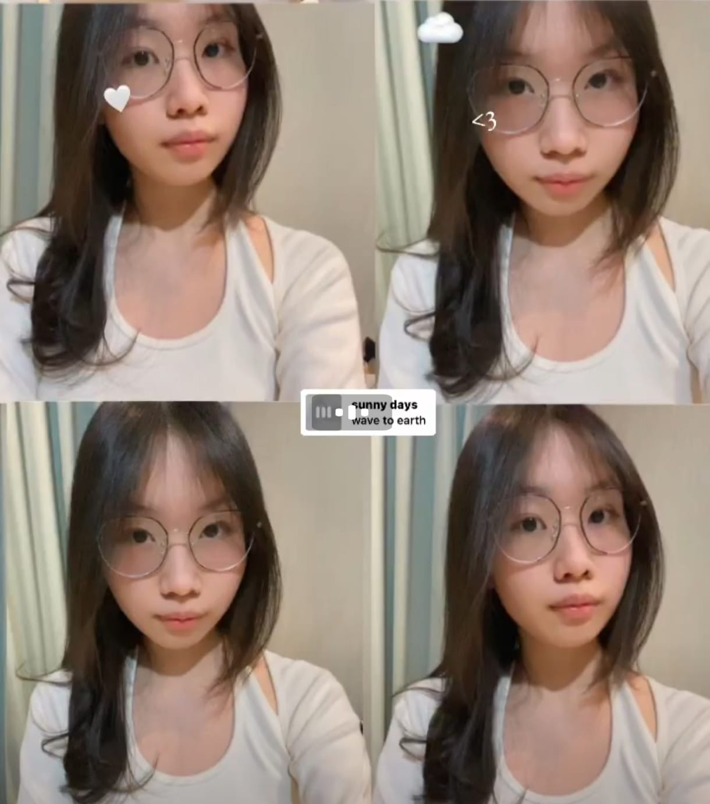

Selamat ulang tahun Grace Tandokallo !!!

Ucapan dari saya
Selamat ulangan tahun yang ke 16 yaaaa Grace. Bangga pasti sih udah umur 16 apa ga senang??? wkwkwk oh ya berarti aku manggil cece lagi kah??? haiyah maleslah wkwkwk
oh ya sekali lagi selamat ulang tahun Graceeeeeeee cantikkkk
Sorry kalo kurang bagus buatan saya Hehe

Doa dan Harapan saya



Semoga Grace bertambah usia ini bisa lebih dewasa, bisa lebih rajin, lebih pintar, dan makin cakep hehehe. Semoga di usia ini juga kamu bisa menjadi orang yang tetap sempurna dan menjadi idaman saya HEHEHE (pasti sih ini).
Harapan saya juga semoga kamu masih senang dengan saya yang biasa aja ini. oh ya, gimana perasaanmu senang atau bosen dengan saya ??? Grace", pinter-pinter dan sehat-sehat yaa dekkkkk. Maaf agak ga jelas isinya karena harapanku sudah terkabulkan semua hehehe